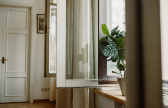

Find pladsen
Stil planten, hvor lyset passer til dens pasningsråd. Undgå at vælge plads kun efter udseendet.
Find en passende plads, stil planten klar, og undersøg, om den har brug for vand.
Se de tre trin
Stil planten, hvor lyset passer til dens pasningsråd. Undgå at vælge plads kun efter udseendet.
Sæt potten med hul i bunden i en underskål eller skjuler. Planten må ikke stå i overskydende vand.
Mærk på jorden, og følg plantens pasningsråd. Vand kun ved behov, og lad overskydende vand løbe fra.